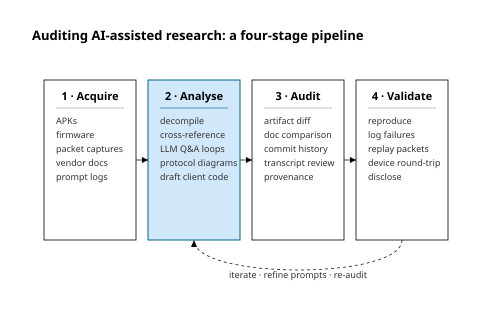

Abstract
Modern large language models collapse the effort gap that has, for a decade, served as the dominant security model for consumer IoT. Two empirical case studies — Spider Farmer BLE controllers and EcoFlow PowerOcean residential energy systems — and a third recursive case study of this paper's own production demonstrate that AI-assisted analysis turns theoretical protocol knowledge into practical, replicable local integrations at roughly six to twelve per cent of the manual labour cost. Two further IoT-Integrator runs (Ondilo ICO Spa V2; Balboa Gateway Ultra) cross-validate the methodology across an obscurity-vs-authentication spread. The collapse is genuinely double-edged but it is also asymmetric: it favours integrators over attackers, at least at present, because verifying an integration against a live device is cheap while verifying an exploit against a live target is not. The contribution of the work is not the case studies — those are largely prior community work — but the integration of eight individually unoriginal practices into a discipline under which AI-assisted research is auditable per artifact: transcript preservation, verification-status labelling, provenance maps, mirror discipline between prose and submission source, a recursive meta-process case study, base-rate-anchored AI disclosure, legal honesty about authorship, and FAIR alignment as a precondition.
Source: paper/main-condensed.md §Abstract.
1. The effort gap and the central thesis
The dominant security posture for consumer IoT is not cryptographic but economic. Proprietary protocols, obfuscated APKs, and undocumented APIs raise the activation energy of integration high enough that a casual researcher gives up. We name this implicit defence the effort gap and read it as the de-facto interoperability barrier of the last decade. The thesis is that the effort gap has collapsed asymmetrically — faster for interoperability work, where success is verifiable against a working integration, than for offensive work, which still demands target selection, persistence, and operational tradecraft.

Source:
paper/figures/data/effort-gap.csv; generation script fig1-effort-gap.py.The peer-reviewed software-side anchors are by now consistent: a 24.4 % reduction in cognitive burden when reading AI-augmented decompiler output (L-RE-1), a 31 %→53 % correct-solve-rate uplift on reverse-engineering tasks (L-RE-2), and a >100 % improvement in re-executability for AI-assisted code synthesis (L-RE-3). The base-rate evidence on the defender side is equally blunt: more than 70 % of 17 243 BLE-enabled Android APKs carry at least one security vulnerability; 1 973 of 6 208 IoT companion apps surveyed expose user data without proper disclosure; 28.25 % of 1 362 906 deployed IoT devices suffer at least one N-day vulnerability and 88 % of analysed MQTT servers have no password protection. Spider Farmer and EcoFlow are not exceptional cases of consumer-IoT insecurity; they are the median.
Source: paper/main-condensed.md §1; literature anchors docs/sources.md clusters A (Reverse engineering) and J (Defender base rates).
2. Evidence shape: case studies and headline numbers
The evidentiary base is four device-integration case studies (Spider Farmer, EcoFlow PowerOcean, Ondilo ICO Spa V2, Balboa Gateway Ultra) plus a recursive meta-process case (the paper itself). Table 1 reproduces the headline-KPI table.
| Spider Farmer | EcoFlow PowerOcean | Meta-process (this paper) | |
|---|---|---|---|
| Defence model | AES-128-CBC keys/IVs hardcoded in APK | 3 undocumented API surfaces; vendor docs cover only 1 | None — open by construction |
| AI-assisted effort | ~10.5 h across 7 transcripts | ~8 h across 3 transcripts | ~17.5 h (running) |
| Estimated manual baseline | 60–120 h | 80–160 h | ~300 h |
| Effort-gap compression | ~12 % of manual | ~7 % of manual | ~6 % of manual |
| Live credentials exposed | Yes (MQTT) — redacted | No (token-bearer) | N/A |
| Dual-use blast radius | Per-device horticulture control | Grid-in / battery-reserve / EV-charger writes | Fabricated citations, unsourced legal opinions, redaction failures |
Source: paper/main-condensed.md §2 Table 1; per-case derivations in paper/main.md §3.7, §4.7, §5.7, §6.1.
Spider Farmer sealed its BLE protocol with AES-128-CBC under hardcoded keys and IVs, complemented by a self-signed-certificate MQTT broker. The AI-assisted contribution was reconciliation rather than discovery: four prior community implementations agreed on the cryptographic primitives but disagreed on the dynamic-IV byte range and on one activation-flow opcode, and the AI pass surfaced the disagreement in minutes rather than the days a byte-level cross-read of four codebases would otherwise demand. The case yielded a working Home Assistant integration plus, as a byproduct, the same live MQTT broker credentials that an independent community thread had previously recovered.
EcoFlow PowerOcean sealed its consumer surface behind three undocumented API surfaces of which the vendor publishes only one, the AI-assisted workflow recovering the writeable-parameter catalogue from APK constants and resolving the three-surface ambiguity in a single pass. The integration shipped six new writeable Home-Assistant entities (system reboot, self-check, backup-reserve SOC, fast-charge SOC, charger power limit, grid-in power limit). The dual-use surface here is non-trivial: the same controls that enable local automation enable remote denial-of-availability against a residential energy system.
The recursive meta-process case treats the paper itself as a third reverse-engineering target, with the same threat model (fabricated citations, silent memorisation, prompt injection, AI-generated legal opinion mistaken for sourced commentary) and the same artifact-inventory and provenance-map shape as the device cases.
Source: paper/main-condensed.md §2; full case studies in paper/main.md §3, §4, §5.
3. Method shape: a four-stage pipeline with a ladder underneath it

paper/figures/fig5-methodology.svg.Each case study follows the same four-stage pipeline: vendor and community artifacts are acquired and embedded under experiments/<case>/original/ at a pinned commit; AI-assisted analysis produces a protocol map or surface enumeration whose every claim is then audited against the embedded code at the pinned commit; validation re-runs the smoke test against the live device or, in the meta-process case, against the rebuilt PDF and the rule-12 mirror parity check.
Underneath the pipeline sits a verification-status ladder applied to every cited source: an entry progresses from [unverified-external] through [needs-research], [lit-retrieved], [ai-confirmed], and finally to [lit-read], and a paper claim may only invoke a source at the stage that source has reached. As of 2026-05-05 the ladder is explicitly aligned with two existing community vocabularies: PRISMA 2020 flow phases for the retrieval-depth axis, and GRADE certainty of evidence for the invocation-strength axis.
Crosswalk: Methodology → Verification ladder; full mapping in docs/fair.md §F(AI)²R; legend in docs/sources.md.
4. Discussion: the eight integrated practices

The eight practices are individually unoriginal — conversation logs have been shipped with replications before, verification-status labels exist in evidence-based-medicine practice, provenance maps exist in bioinformatics, FAIR predates LLMs — and the contribution is the integration. They are: (1) transcript preservation; (2) verification-status labelling; (3) provenance maps; (4) mirror discipline; (5) a recursive meta-process case study; (6) base-rate-anchored AI disclosure; (7) legal honesty about authorship; and (8) FAIR alignment as a precondition, with the proposed F(AI)²R extension below as an explicit forward direction.
Read as a single discipline, the eight practices cover three failure-mode axes that the literature makes load-bearing. Sloppification is the proximate corruption of the scientific record by undisclosed AI-assisted output; the verification-status ladder, transcript-as-artifact discipline, and base-rate-anchored disclosure address it head-on. Model collapse is the longer-horizon dilution of the corpus on which future foundation models are trained; provenance maps, mirror discipline, and FAIR alignment preserve the human-verified ground-truth signal. Dual use is the asymmetry developed below.
Source: paper/main-condensed.md §4; worked examples in paper/main.md §10.
5. The dual-use asymmetry
The dual-use asymmetry is the most under-discussed feature of the post-LLM threat model. The same workflow that yields a Home Assistant integration yields the recovered MQTT credentials and the live device write paths; the difference between an integrator and an adversary is governance, not technical capability. Recent evaluations report that LLMs are far more cooperative than competent at automated exploit generation — no model successfully synthesised exploits for refactored security labs in the L-VD-1 evaluation — while disclosed-CVE proof-of-concept generation already reaches 8–34 % on public information alone and 68–72 % with adaptive reasoning (L-VD-2), and the cost-asymmetry literature reports LLM-mediated malicious-content production at roughly 125–500× cheaper than human effort (L-VD-5).
Source: paper/main-condensed.md §4 (final paragraphs); long-form treatment in paper/main.md §6, §7.
6. F(AI)²R — the proposed extension
The community already has two adjacent precedents for adapting the FAIR Guiding Principles to non-data artefact classes. FAIR4RS [Chue Hong et al., 2022] extends FAIR to research software, scripts, computational workflows, and executables; FAIR4ML [RDA, 2024] extends FAIR to machine-learning models and model evaluations. Neither yet covers AI-mediated research processes — exportable conversation transcripts, versioned prompts, tool-and-model version manifests, verification-status ladders, structured redaction policies.
We propose, as a target for community refinement rather than as a finished standard, that the eight practices be developed into a FAIR for AI-Assisted Research extension under the working name F(AI)²R (read F-A-I-A-I-R). The mapping: persistent transcript identifiers onto Findability; the structured redaction policy onto Accessibility; a transcript-export and prompt-version manifest onto Interoperability; the combination of exportable transcripts plus declared tool and model versions onto Reusability. The repository accompanying this paper already practises de-facto versions of every element on that list. Naming what we are already doing, and surrendering it to peer scrutiny before it hardens into convention, is itself the call-to-action.
Naming note (2026-05-05). Originally proposed 2026-05-04 under the working name FAIR4AI; renamed on 2026-05-05 to F(AI)²R on the grounds that the AI-assisted dimension is what the extension transforms in every FAIR axis (4AI heißt alles), so we fold (AI) into the acronym rather than appending an external 4AI suffix. The 2026-05-04 working name is preserved in docs/sources.md L-FAIR-3 and in the logbook.
Source: paper/main.md §8.4 / paper/main-condensed.md §4 (final paragraph); full per-axis cells in docs/fair.md §F(AI)²R.
7. Limitations
The case base is small and consumer-segment. Four device-integration cases plus one recursive meta-process case were sampled through researcher need rather than randomly, and all four are in the residential / horticulture / pool-and-spa / energy segments; industrial, OT, ICS, and safety-critical hardware are not covered.
Validation completeness varies across cases. Spider Farmer and EcoFlow validation completed against vendor code at commit ffdf60c; the Ondilo and Balboa runs are cross-validation with researcher-side device validation still pending.
The study's outputs are themselves dual-use. The same artifacts that operationalise transparency are the inputs an adversarial integrator needs. The structural mitigations (rule-13 redaction policy, dual-use mirror per weakness-table row, configuration-only Phase 3 outcomes, no public push or Zenodo deposit without explicit researcher consent under rule 14) raise the cost of laundering the methodology as an exploit pipeline but do not eliminate it.
Source: paper/main-condensed.md §5.
8. Conclusion
AI-assisted reverse engineering does not invent new capabilities; it lowers the activation energy of capabilities that already existed. The Spider Farmer and EcoFlow PowerOcean cases show that this lowering is enough to collapse the effort gap that previously sustained "security through obscurity" as a viable consumer-IoT defence; the Ondilo and Balboa cross-validation cases place the methodology beyond the original two; the recursive meta-process case shows the same compression applied to the production of empirical research itself.
The empirical moment this paper documents is unusual: the present cohort of researchers experiences AI-assisted scientific work as a routine modality rather than as an experimental novelty, and that position carries the obligation to use the window in which the practice is still being formed to generate the norms of acceptable use rather than to inherit them, retrofit them, or have them imposed after the fact. The candidate F(AI)²R extension above is the same offer in standardisation form: a name we propose and surrender to the community.
Obscurity is dead. What replaces it has to be designed, not assumed.
Source: paper/main-condensed.md §6.
Read the canonical artifact
This page is a hand-authored summary; the canonical artifacts are the PDFs.